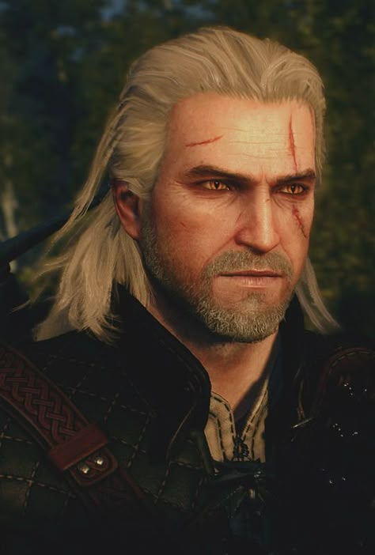
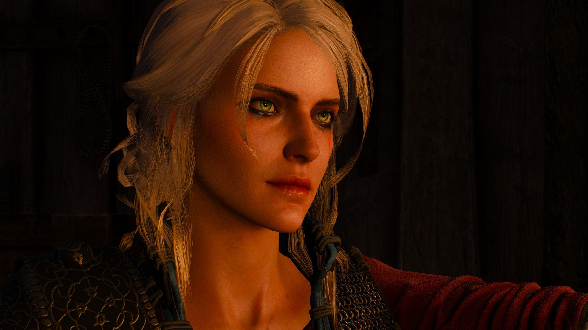

«Ведьмак» — серия романов польского писателя Анджея Сапковского в жанре фэнтези.

Геральт из Ривии — главный герой, ведьмак, профессиональный охотник на чудовищ.
Текст после изображения без обтекания.

Цирилла Фиона Элен Рианнон, или просто Цири, — детская императрица Нильфгаарда.
Персонажи серии
| Имя | Роль | Описание |
|---|---|---|
| Геральт | Ведьмак | Главный герой, мутант |
| Йеннифэр | Чародейка | Возлюбленная Геральта |
| Лютик | Бард | Лучший друг Геральта |
Основные саги:
- Последнее желание
- Меч Предназначения
- Кровь эльфов
- Час Презрения
- Крещение огнём
Полезные ресурсы:
JavaScript демонстрация
Геральт из Ривии — ведьмак, профессиональный охотник на чудовищ. Он странствует по Континенту, выполняя заказы по устранению опасных существ.